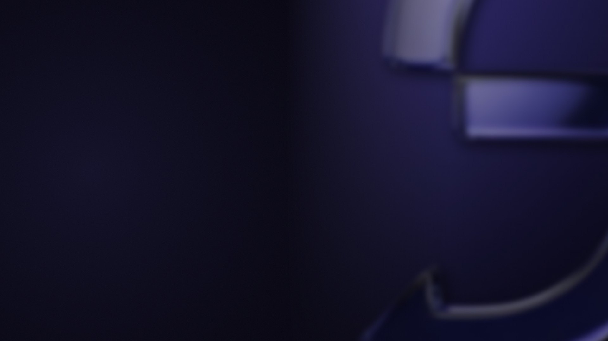

Share one window in Teams, Zoom or Meet. Then hold Ctrl + Alt and click any other window — your call sees it instantly. No stopping, no re-sharing, no dead air.
ShareSwitch opens a window that mirrors any other window, live. You share that one window once — every switch after that happens inside it.
In your call, pick “ShareSwitch” from the window list. You do this once, at the start.
A violet frame follows your cursor, showing which window you're about to send.
Your call sees the new window immediately. Nobody waits, nobody asks “can you see it now?”.
Save the windows you present most, then jump straight to them from anywhere.
Mirror the window you click
Save the window under your cursor to a number — or just click it to use the next free one
Jump straight to that window
Step through your open windows
It's a screen-sharing tool with a global hotkey. You should be sceptical of that — so here's exactly what it does.
No telemetry, no analytics, no update checks. Nothing leaves your computer.
Only modifiers, Escape, digits and arrows pass — and digits and arrows only while a modifier is held. Everything you type is discarded inside the hook.
Your desktop, other apps and system notifications never reach the call.
Every line is on GitHub. No admin rights needed, and a portable version needs no install at all.
That's SmartScreen reacting to a new, unsigned app — not a detection of anything harmful. Click More info → Run anyway, or build it from source if you'd rather verify it yourself.
Anything that can share a single window: Teams, Zoom, Google Meet, Slack huddles, Discord, OBS. To them, ShareSwitch is just a normal window.
Not yet — the Windows feature used for mirroring doesn't include it. Great for documents, designs and dashboards; less so for demonstrating precise clicks.
No. The mirror is drawn by the Windows compositor itself — no video encoding, no capture loop. It idles at essentially zero CPU.
Not today. macOS has no equivalent of the Windows feature this is built on, so it would be a full rebuild. If you'd use it, tell us on GitHub.